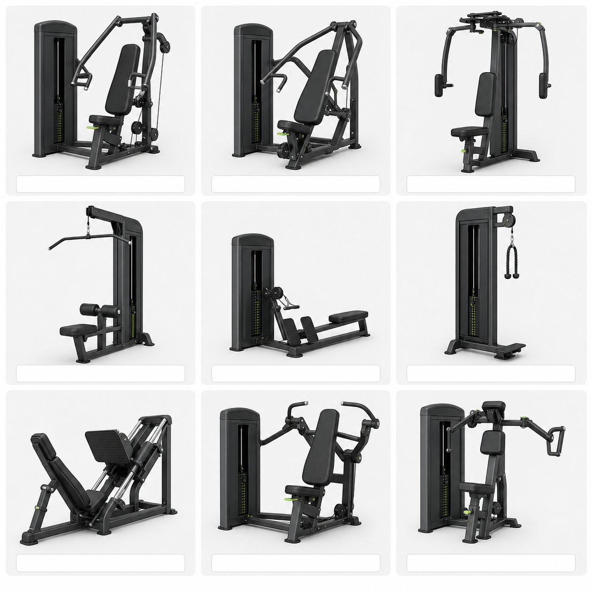

胸 · 三头
胸部厚度与肱三头肌｜约60分钟
- 坐姿胸推机 4组 × 8–10次｜把手对准胸中部，肩胛贴靠背
- 上斜哑铃卧推 4组 × 8–10次｜凳背约30°，肩胛后收，不耸肩
- 蝴蝶机夹胸 3组 × 12–15次｜手肘微弯，胸前合拢
- 绳索下压 3组 × 10–12次｜手肘贴近身体，只伸肘
- 绳索过顶臂屈伸 3组 × 10–12次｜上臂固定，肘朝前
- 器械双杠臂屈伸 2组 × 10–12次｜身体稳定，肩前侧不适就换动作
MUSCLE BUILDING PLAN
目标：增肌＋减脂塑形。每次力量训练结束后完成对应有氧。
CHOOSE TODAY
GYM TRANSITION
7次结束后，在唤燃星许坦东街店继续按 1→2→3 循环。现场找不到器械时，直接在动作卡中选择替代动作；身体不舒服时可随时切换训练。
GYM EQUIPMENT
第一次到店照着现场勾选。取消的器械不会再出现在该门店的动作备选中。
每个动作先做1–2组轻重量热身。正式组保留约2次余力，组间休息60–120秒。每次力量后完成15–30分钟有氧。
胸部厚度与肱三头肌｜约60分钟
背宽、背厚与肱二头肌｜约60分钟
下肢基础与肩部轮廓｜约65分钟
每次任选2–3项：卷腹3×15、悬垂/仰卧举腿3×10–12、死虫式每侧3×10、平板支撑3×40秒。动作慢而稳定，不借力；明显酸痛时休息，不要每天练到力竭。
EQUIPMENT GUIDE
按图片从左到右、从上到下识别。不同品牌外形会不同，找不到时把名称给健身房教练看。

选择“完成目标次数后还能规范做2次”的重量。连续两次完成全部次数后，上肢加1–2.5kg、下肢加2.5–5kg。若关节疼或动作变形，立即减重或停止。
热身3–4档、3分钟；主体5–7档或约45–60步/分钟、15–20分钟。身体直立、脚掌踩实，扶手只保持平衡，不用手臂撑身体。适合胸三头或背二头后；腿肩后不做高强度爬楼。
胸三头后：跑步机速度4.8–5.5km/h、坡度6–8%、25–30分钟；或爬楼机5–7档、15–20分钟。
背二头后：爬楼机5–7档或45–60步/分钟、15–20分钟；或椭圆机阻力5–8档、25分钟。
腿肩后：跑步机速度4–4.8km/h、坡度0–3%、15–20分钟；或单车低阻力15–20分钟，不做高强度爬楼。
全程保持能说短句；若必须用手臂撑扶手，说明强度过高。膝盖不舒服时优先改单车或椭圆机。
先从每天约2200–2400千卡试行，蛋白质约130–150g，饮水2–2.5L。目标是腰围下降、力量上升；连续2周腰围不降且体重上升，每天减约150千卡。
燕麦60g＋牛奶300ml＋鸡蛋2个＋香蕉1根
米饭1.5–2碗＋鸡胸/瘦牛肉/鱼180–200g＋蔬菜2拳
香蕉1根＋面包2片＋无糖酸奶，避免油炸和过饱
米饭1.5碗＋鱼虾/鸡肉/瘦肉180–200g＋蔬菜；睡前可加牛奶
每天至少3顿，每顿有一掌半左右的优质蛋白；主食不要取消。蛋白粉不是必需品，只有普通食物吃不够蛋白质时才考虑。睡眠尽量保证7–9小时。
MOTIVATION
认真完成比单纯打卡得分更多，同一天同类任务只计一次。
PROGRESS
手环热量是估算值，用于观察趋势，不建议等量增加饮食。
换手机或清理浏览器前先导出。新手机打开网站后再导入。